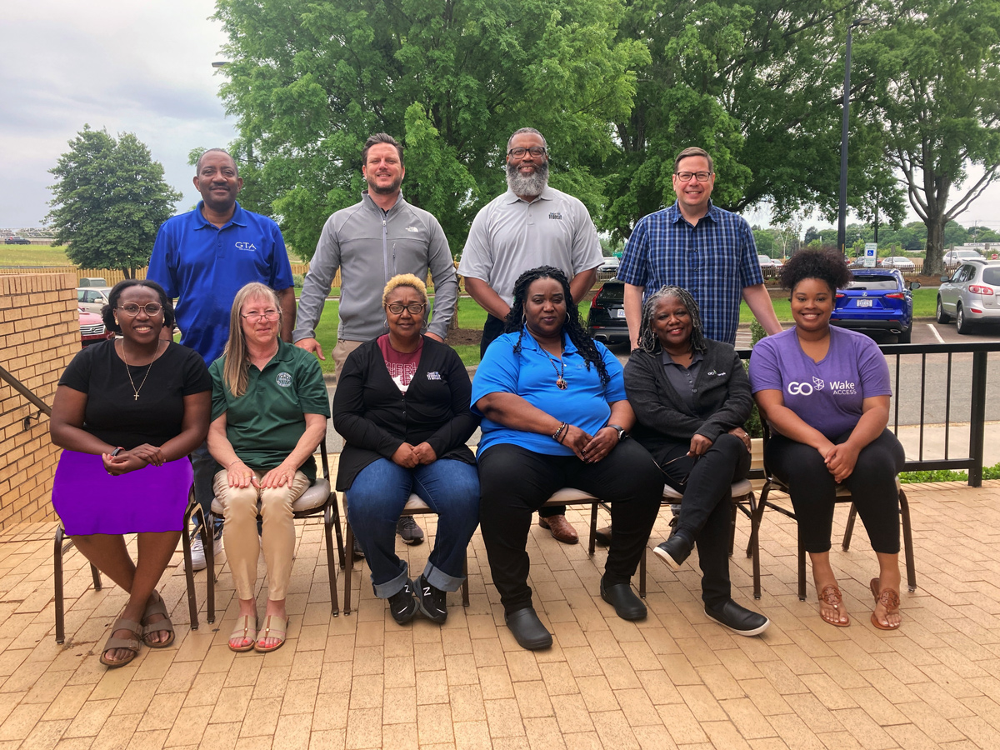

This site along with the NC Transit Careers promotional video was created by members of the 40th class of NC State's
ITRE Transit Leadership Development Program. We love transit, and we think you will too!
Front Row
Nikki Abija - Go Wake Access
Sonia Biggs - Moore County Transportation
Cheonna Boyd - Chapel Hill Transit
Eulinda Gooden - Go Triangle
Kimberly Johnson - Go Triangle
Amber Scott - Wake County Government
Back Row
Kevin Elwood - Greensboro Transit Agency
Daniel Ferucci - Onslow United Transit
Troy Manns - Chapel Hill Transit
Charlie Lee - Mountain Mobility Transit
Support for this project made possible by Ginny Blair, Accem Scott, Jeremy Scott,
and the NC State University Institute for Transportation Research and Education